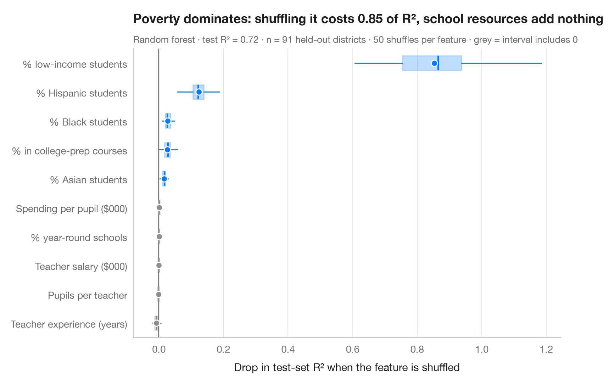

置換重要度
ランダムフォレストが数学の成績を予測する際に頼る学区の特性。各特性をシャッフルしたときのテスト R² の低下で示します。

置換重要度は、どんなモデルにも使える単純な問いを立てます。ある特徴量をシャッフルして目的変数との関係を断ち切ると、取り置いた データに対する予測はどれだけ悪くなるか。大きく低下すれば、モデルはその特徴量に頼っています。シャッフルは無作為なので特徴量ごとに 50 回繰り返し、箱はばらつき、点は平均を示します。箱がゼロをまたぐ特徴量は、このモデルにとって使える信号を持ちません。
木モデルに組み込まれた不純度ベースの重要度とは異なり、置換重要度はテストデータで計算され、モデルの種類をまたいで比較でき、異なる値の多い特徴量に偏りません。測っているのは モデル が何を使っているかであって因果効果ではなく、相関した特徴量は重要度を分け合い（互いに隠し合う）ことがあります。データは statsmodels 付属の 1998 年 STAR テストにおけるカリフォルニア州の学区 303 件（sm.datasets.star98）で、目的変数は数学で全国中央値を上回った生徒の割合、これを学区の 10 の特性（貧困、民族構成、教員、支出、学級規模、大学進学準備課程の履修）から予測します。モデルはランダムフォレスト、重要度は sklearn.inspection.permutation_importance によります。ここでは低所得世帯の生徒の割合が圧倒的で、それが分かれば教員の給与、支出、学級規模は何も加えません。これはモデルの予測についての記述であり、資源が重要でないことの証明ではありません。
コードおよび図中のテキストは英語です。
import matplotlib.pyplot as plt
import numpy as np
import statsmodels.api as sm
from sklearn.ensemble import RandomForestRegressor
from sklearn.inspection import permutation_importance
from sklearn.model_selection import train_test_split
# Data: 303 California school districts; outcome = % of students above the national median in maths
d = sm.datasets.star98.load_pandas().data
y = 100 * d["NABOVE"] / (d["NABOVE"] + d["NBELOW"])
names = {"LOWINC": "% low-income students", "PERASIAN": "% Asian students", "PERBLACK": "% Black students",
"PERHISP": "% Hispanic students", "AVYRSEXP": "Teacher experience (years)",
"AVSALK": "Teacher salary ($000)", "PERSPENK": "Spending per pupil ($000)",
"PTRATIO": "Pupils per teacher", "PCTAF": "% in college-prep courses",
"PCTYRRND": "% year-round schools"}
X = d[list(names)]
X_tr, X_te, y_tr, y_te = train_test_split(X, y, test_size=0.3, random_state=0)
model = RandomForestRegressor(n_estimators=500, min_samples_leaf=3, random_state=0).fit(X_tr, y_tr)
r2 = model.score(X_te, y_te)
imp = permutation_importance(model, X_te, y_te, n_repeats=50, random_state=0, scoring="r2")
order = np.argsort(imp.importances_mean)
fig, ax = plt.subplots(figsize=(8, 5.2))
for i, j in enumerate(order):
v = imp.importances[j]
c = "#007AFF" if np.percentile(v, 2.5) > 0 else "#8E8E93"
ax.boxplot(v, positions=[i], widths=0.5, vert=False, showfliers=False, patch_artist=True,
boxprops=dict(facecolor=c, alpha=0.25, edgecolor=c), medianprops=dict(color=c, lw=1.5),
whiskerprops=dict(color=c), capprops=dict(visible=False))
ax.scatter(v.mean(), i, s=40, color=c, zorder=3, edgecolor="white", lw=1)
ax.axvline(0, color="#3A3A3C", lw=0.8)
ax.set_yticks(range(len(order)), [names[X.columns[j]] for j in order])
ax.set_xlabel("Drop in test-set R² when the feature is shuffled")
ax.grid(axis="x"); ax.grid(axis="y", visible=False)
drop = imp.importances_mean[list(X.columns).index("LOWINC")]
ax.set_title(f"Poverty dominates: shuffling it costs {drop:.2f} of R², school resources add nothing", pad=26)
ax.text(0, 1.02, f"Random forest · test R² = {r2:.2f} · n = {len(X_te)} held-out districts · "
"50 shuffles per feature · grey = interval includes 0", transform=ax.transAxes,
fontsize=9.5, color="#6E6E73")
plt.show()
図にはオプションの PyStatlas スタイル を使用しています。同じ見た目にするには plt.style.use("pystatlas.mplstyle") を追加してください。
引用方法
PyStatlas は Thierry Warin が作成・運営しています。研究や業務に役立った場合は、ぜひ引用してください。
Warin, T. (2026). Permutation importance. In PyStatlas: The Python Gallery of Statistical Graphics. https://warint.github.io/pystatlas/machine-learning/permutation-importance/
@misc{warin2026statlas,
author = {Warin, Thierry},
title = {PyStatlas: The Python Gallery of Statistical Graphics},
year = {2026},
howpublished = {\url{https://warint.github.io/pystatlas/}},
note = {Source code: https://github.com/warint/pystatlas}
}機械学習のその他のグラフ

指標付き混同行列
1996 年にドールに投票した人をロジスティック回帰がどれだけ当てられるか。件数と行ごとの割合を示す交差検証の混同行列に、主要指標のブートストラップ区間を添えます。
yardstick::conf_mat() + autoplot()
適合率–再現率曲線
既婚女性のうち誰が婚外関係を申告するかを予測する 2 つの分類器の、交差検証による適合率–再現率曲線と、平均適合率、無技能のベースライン。
yardstick::pr_curve() + autoplot()
学習曲線
既婚女性のうち誰が婚外関係を申告するかを予測する 2 つのモデルについて、訓練データを増やしたときの訓練正解率と交差検証正解率を示します。
caret::learning_curve_dat() + ggplot()